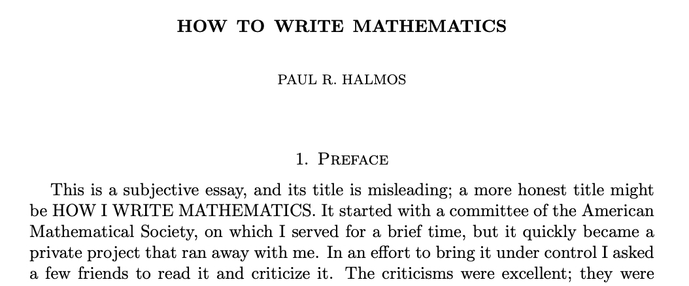
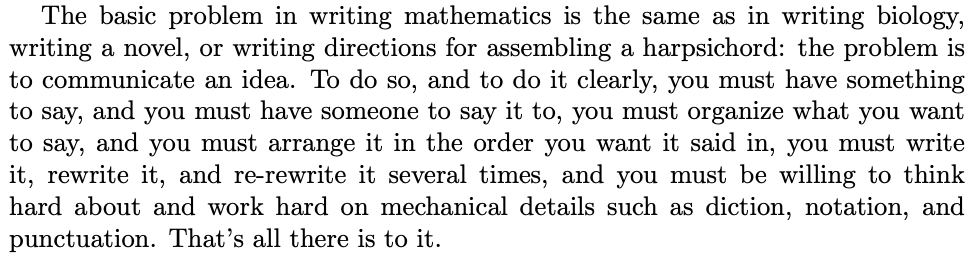

Writing & Presenting
Capstone in Data Science
Agenda 9/2/25
- Communicating
- Presenting
- Referencing
Writing up the project
Work habits
- Start writing today
- Think of it as a long-term relationship (or arranged marriage)
- Write things up as you go, every week
How to write technically
How to write technically

Something to say
- An algorithm, visualization, theory, application that excites you.
- Why is it interesting?
- Context
- What is the history of the idea?
- Why is it important?
- What have other people done?
- What are the open problems?
- What is the story you want to tell?
Someone to say it to
- Your peers
- You, months earlier, in August 2025
- Maybe your adviser(s)
- People unconnected to but interested in the project
Important rules
Distinguish clearly between formal content and informal content
Formal content must be correct (e.g., methods)
Informal content should be helpful (e.g., toy examples)
Make the reader aware of the status of any part of the text
- Is it formal or informal?
- Which part is already known? Which part is your (novel) contribution?
- The reader should not be in doubt (nor should you be)
Presentations
The main challenges: the audience
- The audience doesn’t have the right background.
- The audience doesn’t know what to expect.
- The audience has not been thinking about similar topics.
Important
You have 10 / 20 minutes to get their attention and talk to them about how cool your project is.
The importance of examples
- Every complicated idea should have an example to go with it.
- Examples should be very concrete. Use pictures, actual numbers, etc.
- Examples can even come before the complicated idea.
- Carry one or two examples through your talk and keep coming back to the same example(s).
Important
A good concrete example is the lifeline that the audience can hang on to for the duration of the talk. Finding a good example is hard work and it can make or break a talk.
Presentation to-do list
- Know what you are talking about.
- Don’t wing it.
- Practice… several times… in a realistic environment.
- Cover less. Don’t try to do too much. You are not going to be able to cover every single aspect of your project.
Content: your main task
- What is the problem you are working on?
- You want everyone to understand…
- the setup,
- the main concepts,
- the main question, and
- possibly some of the answers.
Important
The write-up is different than the presentation. The presentation often covers the same ground as the introduction and the conclusion of your write-up.
Content: your main task
- What is the problem you are working on?
- You want everyone to understand…
- the setup,
- the main concepts,
- the main question, and
- possibly some of the answers.
Important
The write-up is different than the presentation. The presentation often covers the same ground as the introduction and the conclusion of your write-up.
Things to avoid in a presentation
- Do not provide any detailed derivations
- Avoid jargon, use descriptive and concrete language to say things. Only define terms that you absolutely need for your talk.
- Avoid unnecessary generalizations, be as concrete as possible.
Important
Your audience will not get hung up on some small detail of the work that is driving you bonkers.
The slides
- write less, no complete sentences
- use bullets and graphics
- include key ideas and phrases so that the audience doesn’t have to catch every word that you say
- one idea per slide is a good yardstick
- don’t jump back and forth
- slow down
- keep ideas simple
The talk
- don’t speed up
- practice the beginning several times, the first 5 minutes is the most crucial, and it is when you are most nervous
- repeat key ideas. repeat key ideas. repetition is good.
- be clear if you are going on a tangent
- don’t change plans in the middle of the talk
- if nervous, pick a friendly face in the audience, and talk to them
BibTeX
BibTeX is a brilliant way for working with sources. I’m going to show you how to use it in Quarto (Quarto supports literate programming in R, Python, SQL, and many other languages).
BibTeX file
- text file (no formatting) with a .bib extension
- each entry is a reference
- can include as many entries as you like, even if you don’t end up using all the sources
BibTeX entries
@article{tukey1972,
author="J. Tukey",
title="Data analysis, computation, and mathematics",
journal="Quarterly of Applied Mathematics",
volume=30,
pages="51-65",
year=1972}
Somewhere within your Quarto document you’ll have: @tukey1972 or maybe [@tukey1972]
BibTeX entries
You’ll use lots of different BibTeX options:
@article@book@conference@inbook@techreport@unpublished
Formatting
Formatting the entries will be done in the Quarto YAML
See example
Next up
September 9, data science ethics from a historical lens. Two really good pre-readings!
September 16 + 23 – first presentations!!!
- ~10 min each
- 5 or 6 people presenting on each day
- use Quarto, Google slides, whatever
- ~10 min each
Reuse
CC-BY-SA-4.0